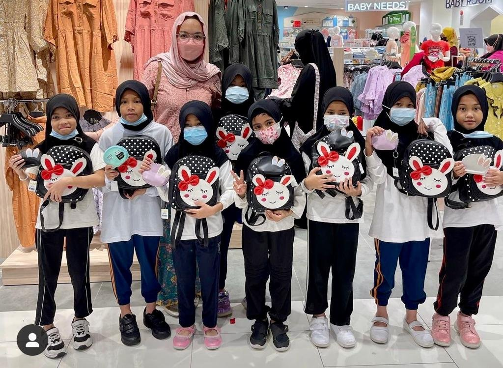

The power of love, education, and community.
Rumah Anak Yatim Nur Qaseh is an orphanage located in Taman Melawati, Kuala Lumpur that provides care and support to orphaned and underprivileged children. Established in the 1990s by Ustazah Nur Qaseh bt Shariffuddin, the orphanage started off caring for a few orphans in her home before growing into a facility that now shelters between 60-100 children ranging from toddlers to teens. The orphanage relies on donations and volunteers to operate, and strives to provide the children with their basic needs like food, clothing, and school supplies, while also offering religious guidance, academic lessons, skills training, and recreational activities. Major Islamic events are celebrated, and open houses organized for donors to visit and see the operations. While an official website or detailed public history is not available, the orphanage continues its mission of providing shelter and nurturing care to these vulnerable children under the leadership of Ustazah Nur Qaseh.